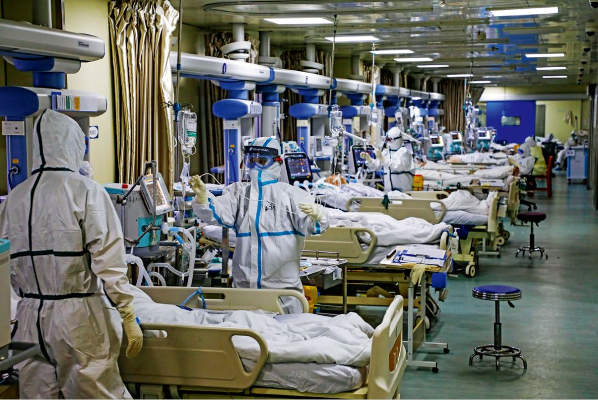
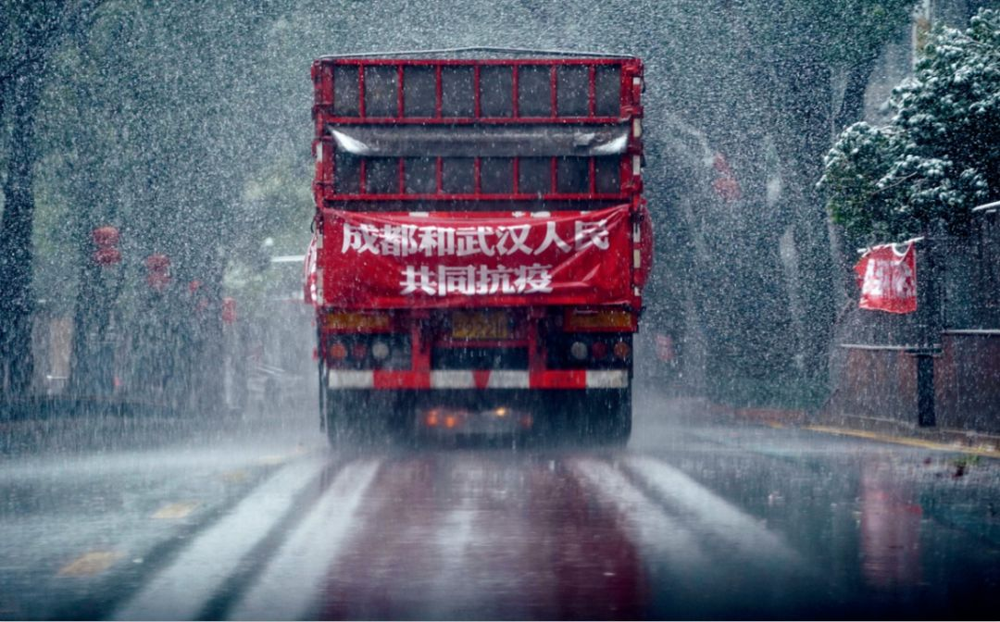

保卫大武汉：决战时刻
原文链接 备份链接 层层战略部署之后，武汉保卫战已经开始。这是一场与病毒和传染源赛跑的立体战役。 要想打赢这场战役，我们需要在时间上，跑在病魔之前，调集重兵，救治患者；在空间上，则要寻遍传染源，斩断传播途径，将其隔离。 《三联生活周刊》 …

基层工作的压力不断加大

2月6日，武汉市蔡甸区人民医院的重症病房。摄影/长江日报 陈卓
武汉战“疫”的攻坚时刻
*本刊记者/刘远航 李明子 黄孝光*
发于2020.2.24总第936期《中国新闻周刊》
雷暴与风雪相继到来，从2月14日的夜里，一直下到第二天晚上。方舱里配备了电热毯，俗称“小太阳”的取暖器同时打开，暖和得给人一种恍若初夏的感觉。一直有传闻称，新冠病毒怕热，天气转暖的时候，这场灾难也会结束。
但江汉方舱医院护士长王培红并未注意到这场风雪。她在舱内待了一整天，傍晚出舱后，匆匆扒了两口饭，便回酒店整理当天的情况记录。医务工作压力大，经常是12个小时不吃不喝，也不上厕所，已经有护士晕倒过。舱里的患者数量维持在1500人左右，持续饱和，而新的方舱医院陆续开始接收患者。
雪同样落在重症监护室的窗户上，窗玻璃变白的时候，让人想起病变的肺叶。武汉的这场“战事”已经进入到攻坚阶段，一方面，要努力提高危重症病人的收治率，降低病死率；另一方面，是全面排查和有效隔离，控制病毒的进一步传播。两者成为了眼下最艰巨的任务。

2月10日，在武汉客厅方舱医院，医护人员在安抚一名因精神压力过大而哭泣的患者。图/新华
重视重症
2月12日下午，广州支援武汉协和医院西院区医疗队队长张挪富正在医生办公室查看病人的各项指标，突然听到对讲机里传来的声音。“20号不行了，20号没心跳了。”对讲机另一头，重症监护室里的值班医生对这名患者进行了40多分钟的心肺复苏抢救，还是没能抢回患者的生命。
就在当天上午，这名中年男性患者的各项指标还是正常的，病情也比较稳定，同事们觉得他好转的希望很大。病人才四十多岁，就这么一下子没了。类似的情况近期已经出现两例，张挪富很受打击，晚上睡觉前还在想这个问题。
“现在ICU里的这些病人和2003年‘非典’时很不一样，这种死亡出乎意料。”张挪富对《中国新闻周刊》说，他的另一个身份是广州医科大学第一附属医院副院长。17年前，“非典”暴发的时候，广州是重灾区，他一直在死亡线上抢救重症病人，并一度感染上了非典病毒。
张挪富并不是第一个注意到这种现象的人。在2月13日晚的新闻发布会上,中央指导组医疗救治组专家、北京朝阳医院副院长童朝晖就提出，新冠肺炎患者出现的是一种严重的急性呼吸窘迫综合征（ARDS），有着不同以往的特点。
同2003年的“非典”相比，新冠肺炎患者的病情进展得更快，缺氧发展得很明显，患者心脏受到的攻击也非常厉害。从前期指标分析发现，这类患者心脏的肌钙蛋白（一种心肌损害标志物）增高比例非常高，因此救治难度比以前要大，也比平时救治ARDS患者要更困难。
江苏省苏北人民医院重症医学科主任郑瑞强也曾遇到肌钙蛋白指标高出心梗病人十多倍的患者。除夕夜前，郑瑞强作为国家卫健委专家组成员进驻武汉，对口支援武汉市肺科医院，这是最早开始收治新冠病毒肺炎患者的医院之一。
“现在临床上确实可以看到有心脏、心循环系统受到损害的表现，但具体机制还不是很清楚。”郑瑞强解释说，有可能是病毒攻击肺部之后，引起呼吸衰竭、低氧血症，因缺氧导致心肌损害，也有可能是病毒直接对心肌造成损害，但究竟是哪一种为主，还是两者兼有，现在还不清楚。
以郑瑞强接触过的危重症患者来看，他更偏向于“低氧导致心肌损害”的可能性，当患者的低氧问题纠正后，患者心脏功能似乎是能够有所恢复的。“治疗关口要提前，不能拖后，越到后期，抢救难度越大。”郑瑞强说。
武汉市肺科医院重症医学科主任胡明也认为，重症病人的治疗，还是越早越好。“心脏损伤主要就是因为送ICU太晚了，患者如果早一点进去，一般不会到这个地步。”而肺科医院因收治重症患者比较早，处理及时，多数在“心衰”关口到来前就得到了救治。
从元旦算起，胡明已经连续在医院工作了40多天。在他印象中，早在1月5日前后，住院部ICU的10张病床就已经收满了。1月21日，中部战区总医院紧急抽组一支40人的医疗队，支援武汉市肺科医院。胡明管理的本院ICU病区原本只占13层的一半。为收治更多的重症和危重症患者，中部战区总医院支援队到来后，将该楼层另一半临时改建成重症监护病房，又增加了10张床位。此外，中部战区总医院还腾空了住院部，将内科住院部全部转为收治新冠肺炎患者的病区，调整后床位增至500余张。然而，很快又收满了。
武汉大学中南医院重症医学科主任彭志勇对收治的138名确诊患者病例样本进行了研究。他发现，从患者首次出现症状到呼吸困难，平均需要5天，从发病到住院需要7天，而发展到急性呼吸窘迫综合征平均需要8天。
彭志勇还提出，从发病算起，第二周是部分患者从重症发展到危重症的分水岭，抵抗力强的患者在这个阶段会出现好转。另外的一些患者，比如有基础病的老年人，则可能会出现呼吸窘迫、多脏器衰竭等情况，继而发展为危重症。
据统计，即使在医疗干预的情况下，仍有15％~20％新冠肺炎患者会发展成重症病人，重症病人中，则有25％~30％会发展成危重症。而在此次的肺炎疫情中，很多医院面临着重症床位和设备的紧缺，这增加了病情恶化患者的比例。
2月1日，张挪富率广东省医疗队到达武汉协和医院西院区支援时，该院已经收治了200多名重症患者。
“就算保守估计，按10％的比例，当时已经有20人可能需要进ICU了，但实际无一人插管（因缺少ICU的床位与医护人员）。”张挪富说，“从治疗的角度看，时机非常重要，不能等。”现在，协和医院16层住院部的810张床位已全部收满，保守估计，其中至少有80名危重症患者。但现实情况是，二楼的ICU只有20张床位。
重症治疗本身又决定了ICU的周转速度慢。“早期送得及时，差不多3周可以出院，送进来比较晚的患者，最少也得4周。”胡明对《中国新闻周刊》说。他管理的病区中，早期收治的患者已有3人治愈出院，还有2人已转到普通病房，死亡的有10人。
条件紧张，“节流”没有可能，就只能“开源”。协和西院区在每层又增设了1~2张重症监护室床位，然而仍有二三十名危重症患者在排队。空出来的每一张床位，都意味着前一位患者的好转，或者死亡。这是一条生命线。有的危重病人终于等到了一张新床位，准备转到楼下2层插管，才被推到电梯口，人就没了。
“除了武汉市有限的几家医疗条件充足、收治病人较早的医院，其他大部分医院的重症监护室中的患者在接下来两周内的死亡率会比较高。” 一位定点收治医院ICU的主任医生对《中国新闻周刊》说。
在武汉市肺科医院，约有40％的重症患者病情好转，甚至出院，但后期收治的患者由于延误了最佳治疗时机，近两周内死亡率较之前有所提高。“目前为止，有2例在住进ICU两周内死亡，四周内死亡的有10人左右，占了近一半。”胡明说。

2月15日，运送成都市成华区捐赠武汉消毒液的卡车行驶在武汉市区。图/新华
抢救的难度
“降低死亡率，需要综合各方面因素，包括收治医院的水平、医疗设备配置、专业医护人员和后勤资源调配等等因素。”张挪富指出。
2月1日，张挪富到达武汉，带着他的团队，花了两天时间对住院楼进行改造。标准的隔离病房需要划分出清洁区、污染区和半清洁区（也叫缓冲区），病人和患者进出使用不同的通道，俗称“三区、双通道”，但协和西院并非传染病专科医院，此前没有这样的住院设计，需要重新规划。
原本的医生办公室和重症监护病房在楼层的同一侧，只隔着一条走廊。由于病房内并未设计成“负压”，临近的办公室也成了“污染区”的一部分，无法使用。张挪富找来了装修公司，在同层的另一侧“清洁区”开辟出新的医生办公室，在办公室和ICU病房之间临时搭出3个连续的“包厢”，作为“缓冲区”。
目前，在协和医院支援的1000多名医护人员尚未出现被感染的情况。其他医院的医护人员感染情况则非常严重。截至2月11日24时，全国共报告医务人员确诊病例1716例，占全国确诊病例的3.8％，其中有6人死亡。武汉市医务人员确诊1102例，占湖北省医务人员确诊病例的73.4％。
支援武汉市汉口医院的广东医疗队也面临着类似的问题，他们将原来的医生办公室改造成缓冲区，用的是木板隔断，缝隙处就用透明胶布封住。医院的插管患者多，增加病床后，原有的氧压无法维持，氧气不足，医疗队就用小推车往病房运送氧气罐，同时向社会求助，最后有企业拿来了家庭式吸氧机作为补充。
被称为抢救病人“最后一招”的ECMO（体外膜肺氧合技术）并不是每家医院都具备的。首批定点医院之一的武汉市红十字会医院是二级医院，没有ECMO，对口支援的四川医疗队副队长、四川省人民医院重症医学科主任黄晓波就用高流量氧气和无创机械插管两种方法进行抢救。
武汉市肺科医院有6台ECMO。截至目前，胡明所在的重症监护病区已经有9名患者使用了ECMO技术，目前一例患者在撤机后病情平稳，3例正在运转，至少需要运转2周，有5例患者死亡。
“人工肺进行工作，让肺暂时休息，然后去纠正引起肺部病变的原因，让肺的功能慢慢修复。它的成功率在50％~70％，也不能夸大ECMO的作用。”郑瑞强解释说，这项技术对医院条件和医生技术水平都有很高的要求，正常情况下并不建议所有医院都使用。对于这次新冠病毒感染的患者，当出现急性呼吸衰竭、但肺功能依然可逆的情况下，才会推荐使用ECMO技术。
除了医疗设备配置不足，各个定点医院的重症监护室还面临着专业医护人员紧缺的难题。一位ICU负责人对《中国新闻周刊》说，各省医疗队临时征调的医生来自内科、外科和皮肤科等，很多人连呼吸机都没使用过，刚来时只能做一些简单的记录和辅助工作，对于最关键的临床决策，却无能为力。
协和西院ICU病区的医护人员配置相对比较充足。算上后来增补的医护人员，广东援鄂医疗队目前共有57人，再加上从武汉协和医院本部征调的15名医护人员，凑足了20名医生、60余名护士的基本编制，基本满足医生与患者1:1、护士与患者3:1的配比。
为解决实时关注患者生命体征变化的需要，张挪富团队里的医生还在病房区域放了几部手机，借助微信视频，跟办公室里的值班医生随时保持联系。一旦出现状况，就可以内外配合进行抢救，“不能等外面的人现穿防护服进去，穿个衣服都要40来分钟，早来不及了。”张挪富说。
“多种原因导致了救治率的差别， ICU的各种支持手段和措施，主要目的是让患者扛过病毒早期的打击，为他的生存和后续治疗抢救创造时间。但是有一部分病人，一直没有稳定或好转，肺功能损伤会越来越重，这部分病人最后可能仍然是无解的。”武汉市某定点医院ICU的一位主任医生对《中国新闻周刊》说。

2月17日，武汉红十字会医院重症隔离病区，一名劳累的护士在病房外靠着墙闭眼小憩。摄影/长江日报 陈卓
艰难的“清零”
如果说危重病人的救治主要依赖医院的医疗技术和组织调动能力，那么封城和隔离考验的，则是基层管理水平。
梁春燕回想起医院里看到的一幕，仍觉得心有余悸。她是华中农业大学的一位离退休人员，住在洪山区狮子山街道。2月初，她去做核酸检测，隔壁病房一个五十多岁的男性突然病情加剧，来不及进入重症监护室，就去世了，也没有确诊。这只是许许多多未被收入死亡数据中的一位。
在医院里，梁春燕注意到，来做核酸检测的人挤满了整个过道。那时候，距离封城已经过去一个多星期，由于准备工作不充分，医疗器械不足，防护物资缺乏，再加上群众的恐慌心理，医院近乎瘫痪。
“单纯封城是远远不够的，应该在封城前要做好充分的准备，封城后跟进相应预防措施。”美国加州大学洛杉矶分校公共卫生学院副院长、流行病学资深终身教授张作风向《中国新闻周刊》分析说。
在封城措施启动的同一时间，武汉市政府开始火速建造火神山与雷神山医院。张作风认为，彼时武汉的主要精力放在建医院上，“没有真正抓住关键”。他在2月初接受媒体采访时就提醒道：“湖北是当前抗击新型冠状病毒感染的肺炎疫情的重中之重，对确诊和疑似病人进行有效隔离是急中之急。”
2月1日，武汉终于在隔离措施上迈出实质一步。当天武汉市新冠肺炎防控指挥部发出紧急通知，要求各区指挥部，在2日12点前，完成对新冠肺炎确诊、疑似、发热及密切接触者“四类人员”的集中收治和隔离工作。
然而，在长达一周的时间内，由于没有足够的医疗资源，社区只能对发热病人进行排查，却无法收治。很多患者四处奔走寻医，成为移动的传染源。
中国工程院副院长、呼吸与危重症医学专家王辰院士是方舱医院建议的提出者，他向《中国新闻周刊》评价称，方舱医院解决了当前武汉疫情中最主要的问题。“由于各医院已无床位可收，大量病人，特别是发病早期传染力强、可以流动、社会交往相对较多的轻症病人未能实现集中收治隔离，留在家庭、社区和社会中，这些患者成为最主要的传染源，是造成疫情扩大的最主要因素，也是亟待接受医疗照护的人员。”王辰说。
自1月23日封城后，武汉市的疫情防控经历了三个阶段：从摸排分类、集中隔离，到如今的“应收尽收”、确诊“清零”行动。为疏导此前防控不力导致的病患“堰塞湖”，社区工作人员的任务不断加码。

2月7日，武汉市东湖高新区一小区，医护人员将发热一周的87岁老人转运到医院。摄影/湖北日报 田悦
2月9日这天，各个街道都接到了死命令，要求收治所有的病人。王军是唐家墩街道的一名转运司机，他接手过一个62岁的患者，因血氧量一直不达标，前后送了四次，才被方舱医院接收。
起初，每次执行完一次任务，王军都会用专业的设备对转运车进行全方位消毒，但任务加重之后，连穿脱防护服的时间都不够，更不用说消毒了，只能自己带着酒精，对座位进行简单的处理，这给司机和患者都增加了感染风险。
“现在每天要求我们把疑似名单全部归零，任务全部压在基层，好多心理素质不够的人都快崩溃了。社区也不知道怎么弄，都是通过个人关系自己跟我们区的定点医院联系。有个别的地方已经被逼疯了，反正把人送到方舱就不管了，就上报说已经送去了，至于进没进到方舱里就不管了。”王军对《中国新闻周刊》说。
收治确诊患者任务艰巨，排查工作同样困难重重。大部分社区采用了线上为主的方式，但很多老年居民信息封闭，深居简出，处于无人管理的隐形状态。由于硚口区一些社区在排查中存在漏报，没有能够组织有效的救治，导致长丰街道正康社区一位姓程的疑似患者在家自缢身亡。据官方通报，当地多名干部受到处分。
“你只能通过普通人的遭遇，来判断政策的执行力度，究竟有没有真正从心脏到达每一个毛细血管。如果每一个细胞都OK，才会感觉整个机体的生命力活泼起来。这一次，基层社区的确很辛苦，但是它只有目标和任务，缺少相应的保证落实的办法与措施。”一位不愿具名的湖北省委机关干部对《中国新闻周刊》说。
从2月12日开始，湖北的临床诊断病例数被纳入到确诊病例中来。诊断标准的变化让该省确诊病例的数量激增，一天之内，武汉的新增病例就达到13436例。这也使得床位的真实缺口浮出水面。
“本来全国已经有希望看到拐点了，但因为武汉病例突然增加，就影响了全国的拐点。但这也是个好消息，说明武汉已经开始把以前存留的病例公开出来了，我们可以把疫情看得更加清楚。”张作风对《中国新闻周刊》表示。
同样是在12日，中央指导组副组长、中央政法委秘书长陈一新在武汉疫情防控指挥部会议上表示，疫情防控正处于胶着对垒状态，武汉的感染者底数还没有完全摸清，潜在被感染的基数可能还比较大。
就在12日，硚口区汉正街的居民张汉英经历了动荡的一天。中午时分，她的母亲病情突然加重，此前，母亲一直和哥哥张汉铁在家自行隔离。张汉英将母亲带到位于江汉区的武汉亚洲心脏病医院，母亲曾在这里做过心脏手术，有病历留存，但院方表示无法跨区收治。
张汉英只好准备转院，但没有车，社区的人说应该打120，但120表示要先跟社区联系，现在都是统一安排。僵持之下，张汉英不知道该怎么办，就在这时，母亲病情进一步恶化，亚心医院终于同意抢救。
到了晚上11点，母亲还是走了，检查结果显示，肺已经全白。张汉英自己也开始出现发热症状。检查结果显示，张汉英与90岁的父亲都是阳性，哥哥是阴性，需要继续观察。13日晚上，一家三人进入社区隔离点。按规定，隔离是一人一间，但因父亲生活无法自理，隔离点又没有看护人员，张汉铁还是跟父亲住在一起。
2月14日晚上，张汉英进入汉阳区武汉体育中心改造的沌口方舱医院，这家方舱医院刚刚建成，开始收治病人，拥有560张床位，由第五批江苏援湖北医疗队省队和国家紧急医学救援队接管。截至2月15日，武汉已经开放了9个方舱医院，有6960多张床位，在院的患者达到了5606名。
张作风对床位缺口做了一番估算：“眼下武汉的病人数是3.8万人。假设重症率25％，就有近1万左右的重症病人。按照武汉市目前定点医院和火神山、雷神山医院约1.2万的床位数量，收治重症病人应该是够了。而轻症病人在2.8万人左右，减掉已经治愈的5000余人和死亡的1500余人，估计轻症病人约2万人出头。方舱医院目前仅有不到7000张床位，可能远远达不到把所有病人隔离起来的要求。”
对此，一位不愿具名的武汉官员告诉《中国新闻周刊》，下一步要加快方舱医院的周转，让轻症患者康复后尽快出院。但实际上，已经有部分患者陆续恢复，从方舱出院，再居家隔离14天，他们的生活就将回到正轨。

2月17日，空军出动运-20等运输机，从上海虹桥等七个机场起飞，向武汉紧急空运军队支援湖北医疗队队员和物资。这是空军第4次向武汉大规模空运医疗队队员和物资，8架运输机共运载676名医护人员和50吨医疗物资。摄影/湖北日报 魏铼
方舱里的世界
住进方舱十多天后，很多患者慢慢感到了一些变化。刚进方舱时，方舱送饭不及时，分量也不够吃。而今聊起，有人表示“方舱的伙食真不错！”
来自贵州救援队的护士杨倩倩告诉《中国新闻周刊》，她第一天进舱时杂乱无章，“不知道自己要做什么”。午饭到后，他们先给女患者派送，遭遇个别男患者抢饭。当天下班后，她和同事在公交车上开小会，决定此后将饭领齐之后再同步分发。
王培红代表武汉协和医院对江汉方舱医院的一应事务进行统筹协调。对她来说，在方舱工作是“把一个临时应急的场所慢慢打造成完整医院的感觉”。
头三天，她每天在舱内待12个小时以上，过程中不吃不喝，挑战着生理极限。“到第四天，我刚进去两小时就不行了，全身冒冷汗，快要倒了。我立马扶着墙出去，休息半个小时才缓过气来。”
此后随着王培红的进舱时间缩短到10小时以内，江汉方舱医院的分组和排班也逐渐固定下来。“我们分了患者护理组、综合协调组、医疗保障组、分诊应急组等。其中，患者护理组中，山西、海南、内蒙古、贵州的救援队承揽了方舱一楼的病区，山西；云南救援队负责二楼的病区。广东、广西、河南、新疆兵团的救援队则分在综合协调组。他们的排班都是6小时一班。”
不久前江汉方舱医院转院一个患者。把患者送到2号门后，救护车迟迟未至，患者病情突然恶化。医护人员紧急叫来急救车，并在旁边的分诊台对病人展开抢救。此事过后，王培红将靠近出口的一个病区腾空并配备急救设备，用来安置临时转院的重症患者。
此外，江汉方舱医院还实现了病人信息电子化录入、身体检查免排队、药物配送自动化等，并为患者开辟了扫二维码反馈问题渠道。
随着新的方舱不断建成以及方舱流程的完善，收治率有望进一步提升。王辰认为，在“应收尽收，应治尽治”之外，还应强调“应早尽早”：“近期收治的病人，基本上是前期积压的存量，百分之八九十都是之前未能收入医院、居家一周以上的患者，此间极易传染他人，不利于切断传染源。在大批存量患者问题初获解决后，‘应早尽早’收治患者成为突出的、关键的工作要点。”
接受采访的时候，硚口区长丰街道某社区书记周念平感到如释重负。前一天晚上，终于把两个危重病人送到了定点医院，一个患者已经等了一个星期，另一个则等了三四天。
近日，周念平感受到了工作节奏的一些变化。表格形式不再五花八门，除了病患的基本信息，主要内容就是三点，包括病情症状、严重情况和本人的去向，收表的部门也统一到了一个部门，不再需要反复折腾。
之前都是区里统一安排隔离点，最近几天发生了变化，由街道办负责征用酒店，扩充床位。据周念平观察，酒店方面的态度是不一样的。短期来看，很多酒店是乐意的，因为空着也是空着，不如被征用，这样可以有收入，缓解压力。但酒店老板也有一些担心，怕疫情过后，大家可能不愿意住到传染病人住过的酒店。
当然，新的问题仍然存在。按照社区管控的统一规定，每户家庭每3天可指派1人外出采购。就在14日那天，在周念平的隔壁社区，有出行需求的居民跟负责值守的人员打了起来。在周念平看来，封闭小区的确能给疫情的防控带来一些好处，但是政策的细则还需要更加细化。
如今，武汉保卫战已经进入攻坚阶段。张作风补充强调说，“如果有可能，在严密防护下，最好把已经染病的1000多名武汉医护人员，转移到有充分治疗和隔离条件的地方，对他们进行有效的治疗。因为这批医护人员，将会是疫情后期各地医疗队撤走后，当地医院恢复元气的主力军。”
（文中王军、周念平为化名）
值班编辑：罗晓兰

封面报道之三
《武汉攻坚——我们如何与疫情赛跑》
（由5篇报道组成）
*点击下图，一键下单*


原文链接 备份链接 层层战略部署之后，武汉保卫战已经开始。这是一场与病毒和传染源赛跑的立体战役。 要想打赢这场战役，我们需要在时间上，跑在病魔之前，调集重兵，救治患者；在空间上，则要寻遍传染源，斩断传播途径，将其隔离。 《三联生活周刊》 …
原文链接 备份链接 武汉封城之初遇上医疗挤兑，“居家隔离”政策随之推出。但社区资源和能力未匹配，反而加重家庭内部交叉传染。这是武汉病例此后暴增的主要原因。 纠错政策姗姗来迟，10天后的2月2日，“居家隔离”变为“集中隔离”。但初期隔离 …
原文链接 备份链接 中国人均占有的ICU病床数，与西方发达国家相比显然不够。 在ICU人员配备不足的情况下超负荷运转， 就不可避免地将病人置于潜在的危险中 新冠肺炎感染后期，有相当比例的病人出现呼吸衰竭、肾功能衰竭、循环衰竭。重症管理的 …
原文链接 备份链接 2月17日，湖北省孝感市孝南区妇幼保健院，医护人员在进行体温测量。中青报·中青网见习记者 鲁冲/摄 本文约3780字 预计阅读时间10分钟 口述：四川大学华西医院重症医学科主任 康 焰 整理：中青报·中青网记者 王 …
原文链接 备份链接 “彭主任，急诊室一个31岁的新冠肺炎病人心脏骤停了，您快来看看，要不要转入ICU。” 2月4日晚上7点半，武汉大学中南医院重症医学科（ICU）主任彭志勇刚从湖北天门考察疫情回到办公室，和财新记者聊了不到十分钟，就 …